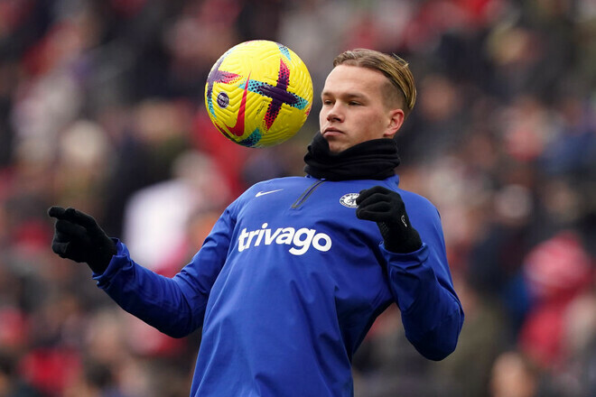

Колишній форвард «Челсі» Джиммі Флойд Хасселбайнк поділився своєю думкою
щодо перспектив Михайла Мудрика в
«Челсі»:
«Арсенал» не настільки сильно хотів його підписувати, і «Челсі» цим скористався.
Думаю, це дуже, дуже
хороший
трансфер для «Челсі». Можу уявити, як він радуватиме
вболівальників у найближчі роки.
Я згадував Джо Коула в цьому контексті, але тепер вважаю, що Мудрик може стати
настільки важливим
футболістом,
наскільки був Еден Азар. Я не порівнюю їх, це було б
нечесно, але, якщо пам'ятаєте, Азару після переходу з
«Лілля» знадобився час на
адаптацію. А потім він раптом став життєво важливим футболістом для «Челсі».